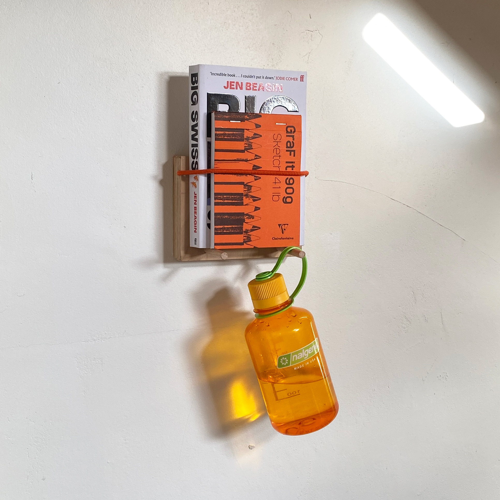
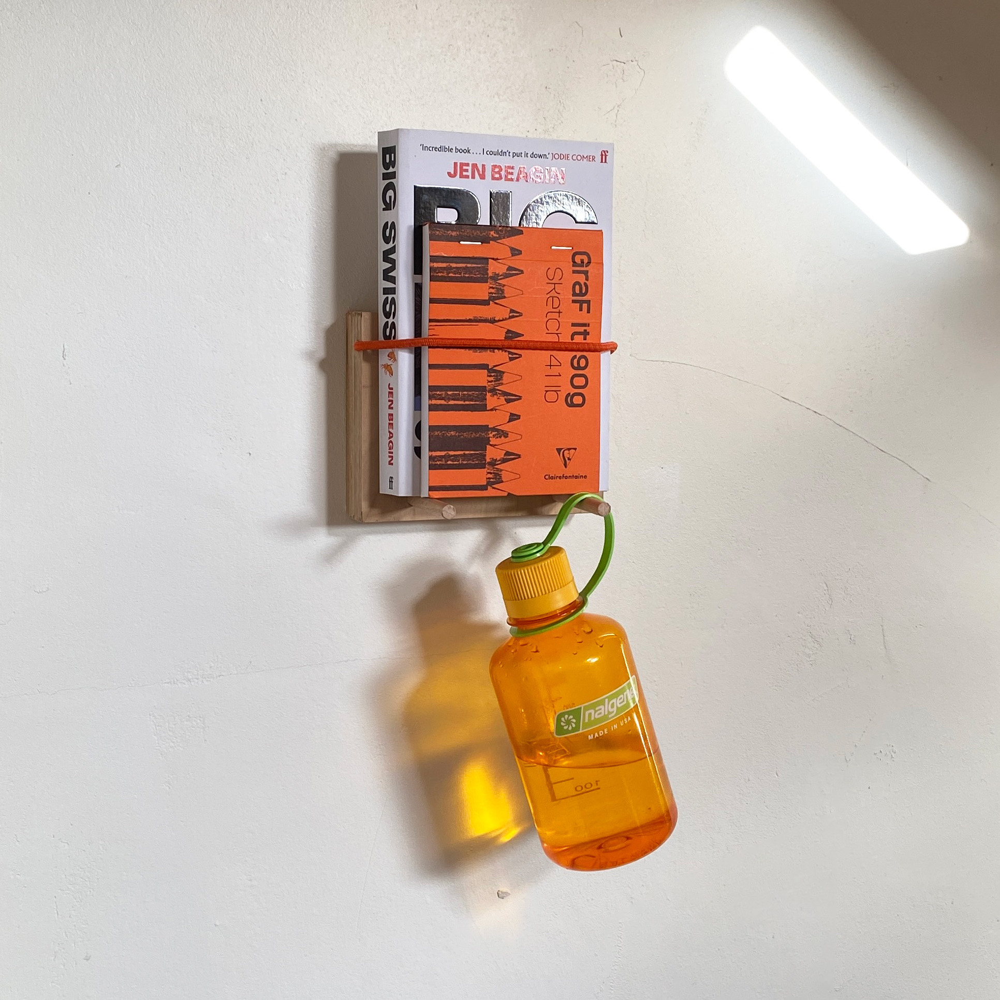

Elastería
Elastería es la estantería en la que colocas lo imprescindible.
Al momento de crearla me la imaginaba al lado de la cama, sujetando tu libro actual o en la entrada de la puerta, colgando de las varillas tus bits and bobs.
Lo que hace especial a Elastería es que no hay sujeciones a la vista, el anclaje a la pared no se ve y además me obsesioné con que estuviese totalmente pegada a la pared. Lo conseguí, no hay gaps entre Elastería y la pared ni tampoco tornillos a la vista.
Los objetos bajo pedido como este están sujetos a la disponibilidad de los materiales necesarios. Si deseas realizar un encargo escríbeme primero a j@vigasworks.com (o haz click en 'escríbeme' un poco más abajo) y valoraremos las diferentes opciones posibles. Siempre estoy abierto a debatir ideas y a escuchar sugerencias.
Contrachapado de abedul
Varillas de madera de haya
Cordón elástico naranja
L x W x H: 14'5 x 11'5 x 3 cm
Varillas de 7 cm
Objeto bajo pedido
40€
 
